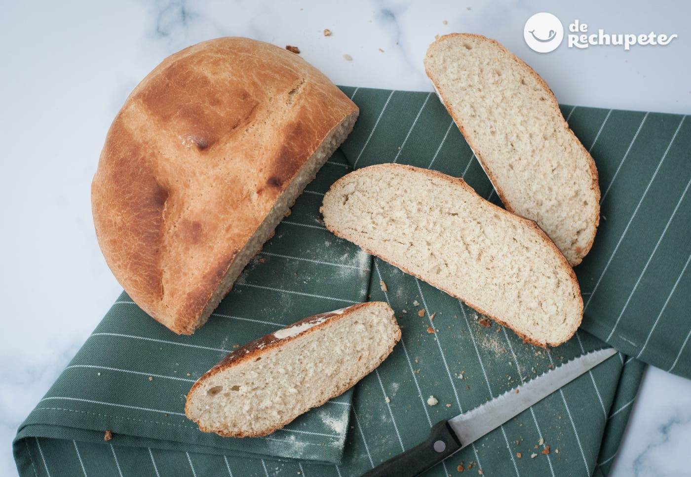

Ingredientes:
310g harina de fuerza w220
harina 000 o harina de trigo con 11,5-12,5% de proteinas
175g agua tibia (no muy caliente)
20g aceite de oliva virgen extra suave
15g de levadura fresca de panaderia o 5.5g de levadura seca de panadero
8g de sal
Preparacion
1. En un bol incorporamos la harina y hacemos un hueco en el centro. Añadimos la mita del agua, sal y el aceite de oliva virgen extra. Con una cuchara de madera comenzamos a integrar los ingredientes. Diluimos la levadura de panadero en el resto del agua y añadimos a la futura masa. Es aconsejable no mezclar al mismo tiempo sal y levadura.
2. La sal puede perturbar seriamente la acción de la levadura durante el proceso de fermentación. El nivel deseable de sal en masas de pan va desde 1,75% a 2,25%. En este caso hemos optado por 8 gramos para que no afecte el proceso de levado y a su vez añada el sabor necesario.
3. Comenzamos a amasar los ingredientes en el mismo bol hasta que formemos una bola. Pasamos la masa a una superficie de trabajo y continuamos amasando. Trabajaremos la masa durante unos 10 o 12 minutos.
4. Elegimos el recipiente que llevaremos al horno y lo espolvoreamos con harina. Colocamos la bola de masa y la pintamos con un poco de aceite de oliva virgen extra. Con un cuchillo afilado hacemos unos cortes en la superficie de nuestra masa y la espolvoreamos con harina. Este pan no va a tener reposo al estilo de otros panes, pues va a levar en el horno. Lo explico a continuación.
1.Encendemos el horno a 220º C con calor arriba y abajo. Es decir precalentamos el horno.
2.Veréis que es muy fácil. Vamos a hornear 40 minutos dentro del Pyrex o cuenco apto para horno y otros 25 minutos fuera de él (para 3.dorar el pan y que quede bien bonito). Os lo cuento a continuación.
Dejamos la masa del pan que tenemos en el Pyrex o cuenco apto para horno (tapado con papel de aluminio, podéis ver las fotos del paso a paso) en la bandeja central durante unos 40 minutos. Aquí es donde va a crecer nuestro futuro pan, sería como el reposo que no ha tenido fuera del horno.
4.Al cabo de estos 40 minutos retiramos la tapa de papel de aluminio de la masa del pan y volvemos a meter al horno durante 25 minutos más.
5.Al retirar el papel veremos que la masa ha crecido pero que aún está sin cocer. Pasados los 25 minutos tendremos el bollo de pan cocido y ligero.
6.Lo retiramos del horno y lo dejamos que se enfríe antes de disfrutarlo. Si os entusiasma el mundo panarra pero no os atrevéis porque os parece muy difícil, podéis empezar por esta receta.

Final
En esta página les ofrecemos recetas faciles y rápidas para disfrutar en familia.
Cada una de nuestras recetas es especial y esquisita.
Nuestras recetas están creadas para que usted sorprenda a su familia y tenga un momento feliz.
En cada una de nuestras recetas de deben utilizar los ingredientes dado, en ocacion de querer agregar algo más es a su gusto.